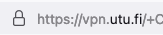

2 VPN-yhteys
Tohtorikoulutettava/muu tiedettä tekevä pääsee lukemaan miltei kaikkia keskeisiä lehtiä suoraan, jos yliopisto tarjoaa VPN-yhteyden avulla tähän oikeuden. Esittelen seuraavassa luvun mahdollistavan workflow’n, jos on Turun yliopistossa opiskelijana.
- Imuroidaan VPN:ää varten client-softa Turun yliopistosta. Tämän kanssa saadaan luotua VPN-yhteys. Googleta “utushop” tai paina suoraan alle kirjaamaani linkkiä:
- Avautuu Utushopin kotisivut. Klikkaa oikeasta ylänurkasta “Kirjaudu sisään” (ks. kuva alla).

- Klikkaa kohtaan “Kirjaudu Turun yliopiston tunnuksilla” (ks. kuva alla). Kirjaudu tunnuksillasi.
- Avautuu alla näkyvä näkymä, klikkaa kohtaan “IT-tuotteet”.

- Skrollaa alas ja klikkaa vasemman marginaalin paneelista kohtaan “Ohjelmistot”:
- Kirjoita sivuston ylälaitaan “vpn” ja paina enteriä:

- Skrollaa alas kunnes näet kohdan AnyConnect VPN, klikkaa siihen:
- Skrollaa alas kunnes näet painikkeen “Asennussivusto”, klikkaa siihen:
- Seuraavaksi pyydetään taas utu-tunnariasi ja -salasanaasi. Jos ja kun näkyy web-selaimen URL-osoitteena vpn.utu.fi-tyyppisen osoite (ks. kuva alla), uskallan itse tuohon tunnarini ja salasanani kenttään antaa (ks. kuva alla).
Ylhäällä pitäisi näkyä tällaisesti alkava osoite:

Keskellä ruutua pitäisi näkyä tällainen kenttä:

- Nyt pääsee vihdoin painamaan linkkiä (kuva alla) ja saa AnyConnect Secure Mobility Clientin imuroitua ja sen jälkeen asennettua koneelleen. Jälleen web-selaimessa ylhäällä näkyy vieläkin vpn.utu.fi-tyyppinen osoite (kuva alla).
Ylhäällä pitäisi näkyä tällaisesti alkava osoite:
Keskellä ruutua on linkki josta saa softan imuroitua koneelleen:

- Kun olet asentanut kyseisen client-softan koneellesi, käynnistä se. Macintosh-tietokoneessa tämä käy nopeiten, kun painat ensin Command-nappulan pohjaan, pidät sitä pohjassa ja painat samalla välilyöntinappulaa (spacebar). Avautuu ns. spotlight-näkymä, josta pääset ohjelman käynnistämään (ks. seuraava kohta alta). Vaihtoehtoisesti voit käynnistää spotlight-näkymän painamalla kuvaruudun oikeasta ylänurkasta suurennuslasia, ks. kuva alla:

- Avautuu ns. spotlight-näkymä, ja heti kun alat kirjoittaa siihen sanaa “Cisco…”, todennäköisesti jo pari kirjainta kirjoitettuasi Macintosh tarjoaa kys. softaa käynnistettäväksi. Klikkaa kohtaan “Cisco AnyConnect Secure Mobility Client”. Ks. kuva alla:

- Client-softa käynnistyy. Kirjoita osoitteeksi client-softan näkymään vpn.utu.fi, jos se ei automaattisesti siinä jo näy. Klikkaa “Connect”:
- Client-softa kysyy vielä utu:n käyttäjätunnuksesi ja salasanasi. Kun yllä näkyy, että vpn.utu.fi-osoitteeseen ollaan VPN-yhteys luomassa, uskallan antaa oman käyttäjätunnukseni ja salasanani:

- Onnistuneen VPN-yhteyden osoituksena näet seuraavalta näyttävän näkymän:

Kun VPN-yhteys on nyt muodostettu, pääset esim. PubMedin kautta selaamaan kansainvälisiä artikkeleja. Siitä lisää seuraavassa luvussa.
Lehtiartikkelien haku utu:n VPN-yhteydellä ja viitteidenhallinta by Ville Langén is licensed under CC BY-SA 4.0